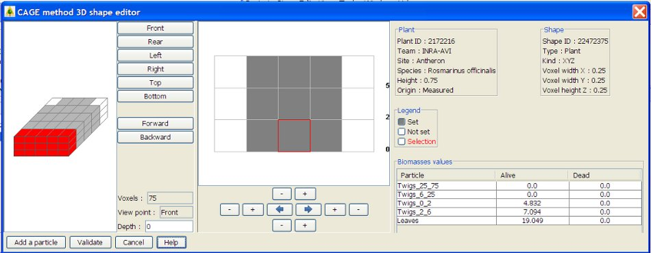
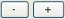

start => help_en => fireparadox
3D SHAPE EDITION (CAGE METHOD)
This interface aims at enter cubes (or voxels) repartition in a *2D shape.
All biomasse values and particles can be different in these cubes, there is no TOP/CENTER/BOTTOM as in the cube method.
Cube can be :

LEGENDS
On top right, 2 panels display general informations about the plant (ID, team, site, species, height, origin) and the shape (ID, sample type, shape kind (XZ=2D), voxel dimensions)
Bellow appears the color legend for each type of cubes:
INITIALISATION
If the shape has been generated from a 2D shape, a rotation algorithm have calculated each biomass in each cube. Calculation is done with distance of each cube from central axe of the rotation.
In other case, all cubes will be SET but without any particle or biomass.
POSITION IN THE 3D SHAPE
In left part of the screen, the 3D shape is displayed in space.
Front/Rear/Left/Right/Top/Bottom aims at see the shape from different direction.
Forward/Backward aims at changing the cube slice point of view.
The selected cube slice appears in 2D in the grid in the central screen.
SHAPE MODIFICATION
To change a cube color (type), select the color on the legend and left clic on the cube. The cube appears in the right color with a red border.
To change several cubes color at the same time, draw a rectangle with the right clic around the group of cubes.
A zoom tool is available by drawing a rectangle with the left clic of the mouse. A single right clic zoom forward.

+ and - increase and decrease the size if the grid in 4 dimensions.
 Blue arrows copy cubes from left to right symetrically to Z axe.
Blue arrows copy cubes from left to right symetrically to Z axe.
BIOMASSES MODIFICATION
In the bottom right part of the screen, for the selected cube, a table appears with particle names and biomass values (alive and dead). Biomass values can be modified and the unit is grams.
biomass value = 0.0 means a measured value equals to zero.
biomass value = -9.0 means a missing value, NONE measured.
biomass value = NaN means ann existing value, NONE measured.
ADD A PARTICLE
Use this button to add a new particle in the biomass table.
After selection and validation, this new particle will appears ine the biomass table with -9.0 values.
VERIFICATIONS
The shape can be validated only if at least one biomass is entered for each SET cube.
Biomass values have to be numerical and greater or equals to zero (except -9.0 and NaN for none measured values)
VALIDATION
Click on Validate to create the new sample or to update biomass values in the database.
In case of plant or layer creation, you will be automatically redirected to shape 2D or 3D creation.
In other cases, you will go back to plant or layer shape list.
CAUTION if the shape has a great number of cubes, the database update can be QUITE LONG (several minutes)